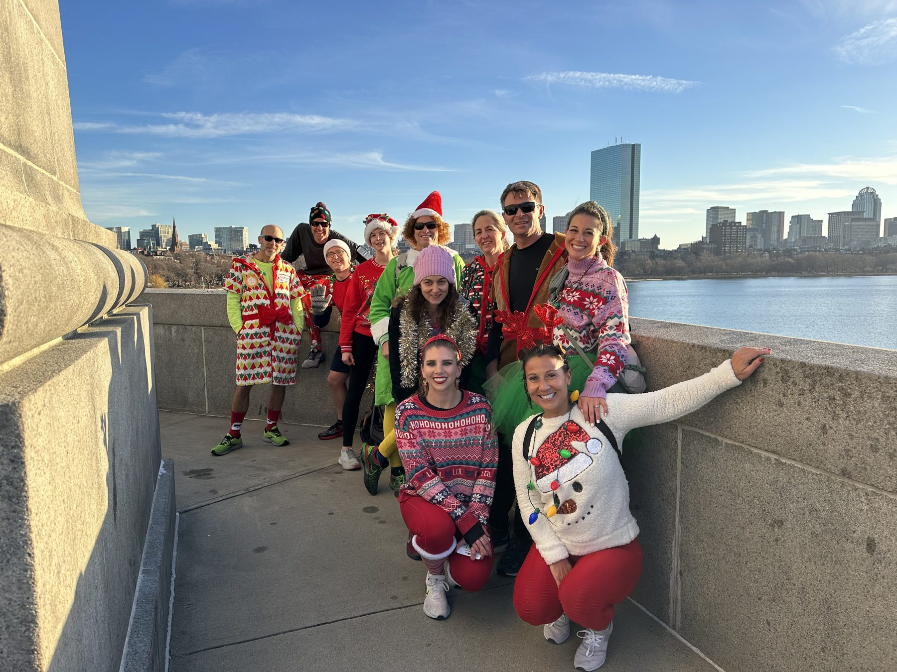
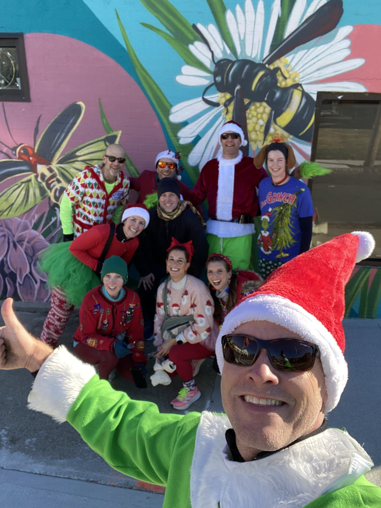
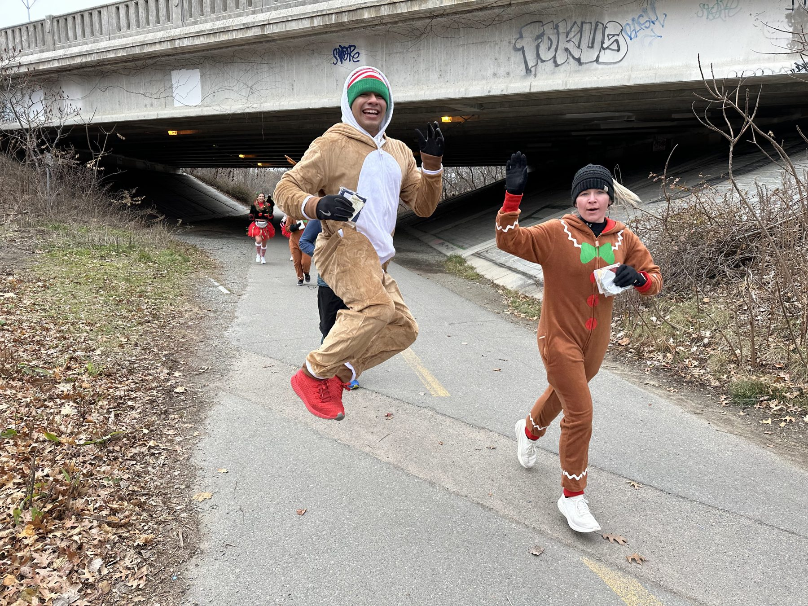
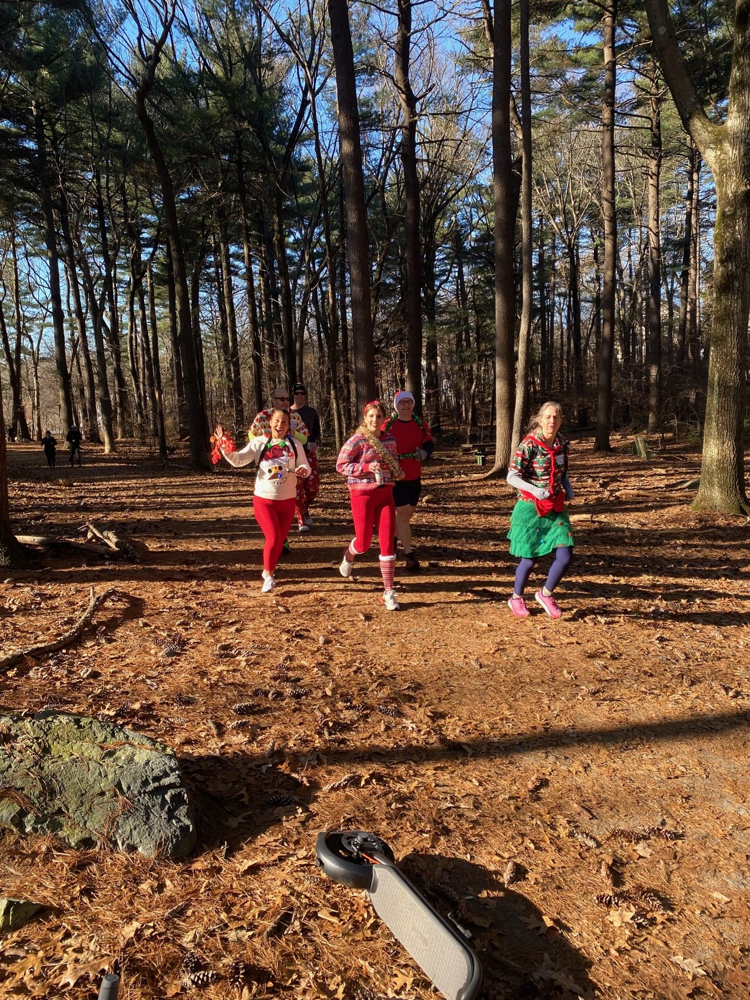
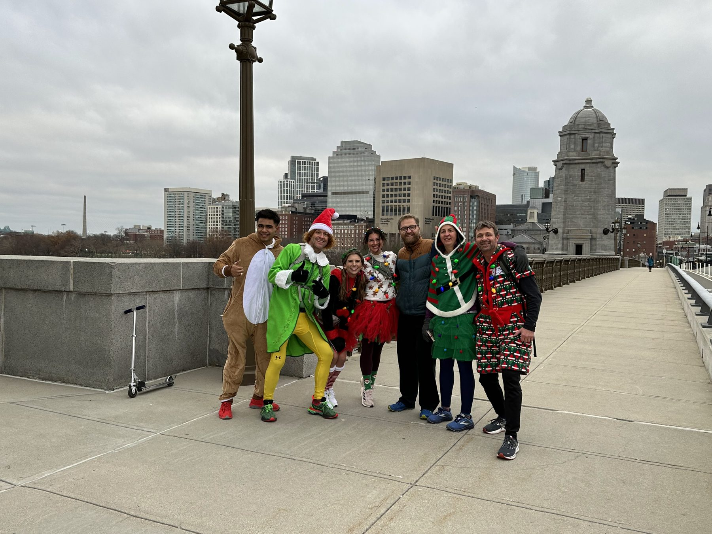
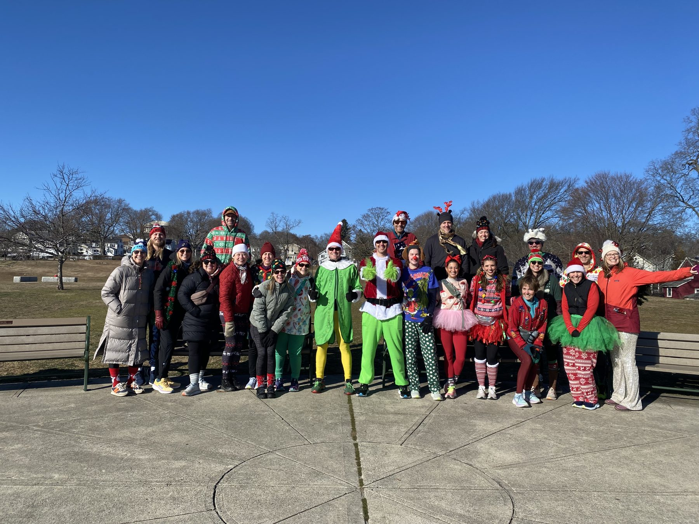

Giving every step of the way.
A mostly flat, totally casual run / walk in your silliest holiday outfit: runners go 9.5 miles from Arlington to Boston Children's, walkers loop 7.4 miles through Cambridge and back. We raise money for Boston Children's Hospital's Every Child Fund, and we hand out gift cards to the people we pass along the way. Think of it as being Santa, but sweatier.

Ok sure, the Gallop has some of the hallmarks of a traditional holiday season run:
But what makes the Giving Gallop awesome is that it's, well, all about giving. The Gallop gives to families in two big ways:




To participate, make a donation of any amount to Boston Children's Hospital's Every Child Fund through the Miles for Miracles Boston Marathon team. Every dollar counts, and the more the merrier! Our 2026 goal is to raise $15,000. It's the time of year to be merry and give all you can. What are you waiting for?!
Donate to Boston Children'sThere is nothing better than doing good, giving back, and bringing cheer to people this time of year. Instead of a registration fee, your "fee" is purchasing, wrapping, and bringing at least $25 worth of gift cards to hand out to the folks we encounter on our run. $25 is the minimum, but we highly encourage you to bring as many as you can. This is your chance to officially be Santa.
Sign Up to Get GallopingRobbins Farm Park. Wrapped gift cards in your pockets, antlers on your head. Runners and walkers split from here.
Runners 4.5 mi to Aeronaut in Somerville. Walkers 3.3 mi to Craft Food Hall at Alewife.
Runners 2 mi through Somerville to Lamplighter. Walkers 2.3 mi up Mass Ave to Punjab in Arlington Center.
Runners cross the Charles, pass Fenway, and finish at Boston Children's. Walkers climb to the Heights Pub.
Stops are optional and self-funded. These businesses aren't sponsors, just good spots to warm up. Heads up: both courses are one-way. No shuttle back.

Grab your ugliest sweater, some gift cards, and a few friends. We'll handle the route.